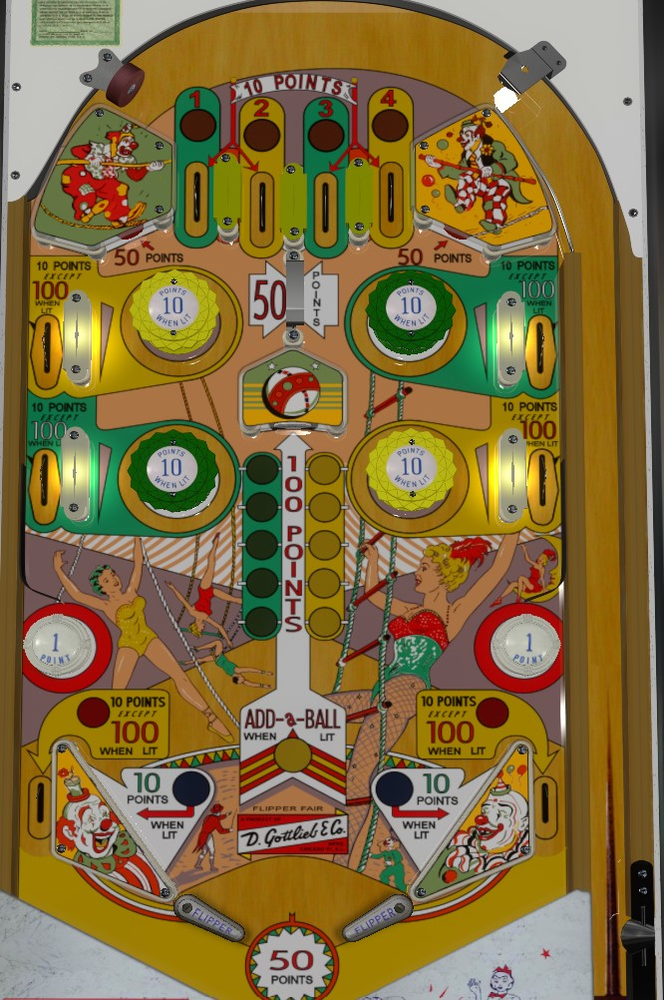

On the plunge, be sure to make a top lane that is light/has not already been made. Collecting a number from a top lane lights a bumper for 10 points instead of 1, and also lights the nearby upper side lane for 100 points instead of 10- #1 is lower left, #2 is upper left, #3 is upper right, and #4 is lower right. Making the #2 or #3 top lane also lights the left or right out lane respectively for 100 points instead of 10 on that ball only. Bumpers and upper side lanes are lit for the rest of the game, unless all four numbers are collected, at which point the player is given 1 extra ball and all lit bumpers/number progress resets.
An up top all day strategy is ideal when possible. Particularly brave players can try to shoot up one of the upper side lanes, picking off 200 points if both are lit, but a more consistent strategy is to shoot just outside the lower pop bumpers. It's not realistic to get additional top lane numbers at any time other than the plunge, but a ball bouncing around the top of the table can still score plenty of lit 10-point bumpers, 50-point rollunder gates, or 50-point standup targets near the upper bumpers.
The center standup target scores 100 points. Hitting any green or yellow bumper moves the green or yellow light one position. If the green and yellow lights are at the same level, the center standup target also scores an extra ball. The wide flipper gap means shots to the center target are always a center drain risk, so it's usually ideal not to go for the center target on purpose unless it is indeed lit for extra ball.
Watch out for the feed from the upper side lanes, as it likes to be a center drain.
There are no in lanes. One of the two slingshots is always lit for 10 points, alternating on 1-point switch hits- unlit slingshots score 1 point. Tilt penalty is just the ball in play. "End of ball bonus" is a flat 50 points received each time the ball drains.
